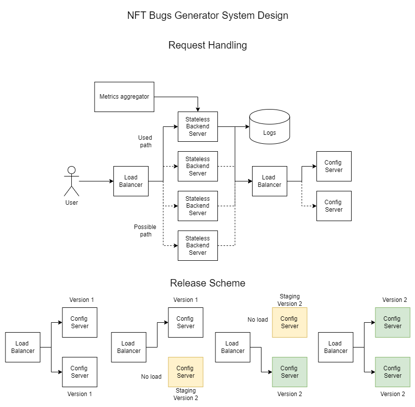

Система должна проверять количество картинок, которые запросил пользователь и возвращать код ошибки 400, если оно превышает разумные пределы.
Так как взаимодействие происходит через единственный URL запрос без агрегации пользовательских данных, то проверок на правильность данных не потребуется, как и на корректность последовательности действий.
Во время работы сервиса могут возникнуть ошибки, о чем он должен сообщить пользователю кодом ошибки 500.
Сервис не предусматривает форм обратной связи, а здоровье сервиса отслеживается метриками работоспособности сервиса.
Пользовательским интерфейсом выступает браузер (или командная строка для продвинутых пользователей). Дополнительных требований к взаимодействию между пользователем и интерфейсом помимо тех, которые есть у стандартных браузеров, нет.
Интерфейсом выступает PC или мобильное устройство.
Интерфейсом выступает браузер и ОС пользователя, которые нужны для сохранения архива с картинками.
Стандартный способ взаимодействия с веб-сервисом - браузер. Взаимодействие между этим сервисом и браузером происходит по протоколу HTTP 1.2 (не HTTP 2.0, чтобы поддерживать старые устройства, версии браузеров и библиотек)
Мы оцениваем число пользователей сервиса как 1.000.000, так как сообщается, что у популярного сервиса OpenSea чуть более 1 миллиона пользователей [2]. Мы рассчитываем, что отдельный пользователь будет использовать сервис часто в короткий промежуток времени. Например, 30 запросов подряд в один день (примерно столько дается пользователю-новичку на платформе DALL-E-2 [3]), но после этого дня пользователь более недели не будет возвращаться к сервису. Поэтому максимальное количество запросов, которые может обрабатывать сервисом одновременно (пропускная способность) - 10.
95% запросов должны обрабатываться менее чем за 5 секунд. Речь идет о времени от запроса пользователя до начала получения архива с картинками. Гарантии на время скачивания связаны со скоростью интернет-соединения пользователя.
Тип входной информации, которую обрабатывает сервис - HTTP запросы типа GET (пользовательские данные не храним, поэтому этого вида достаточно).
Дизайн системы изображен на картинке ниже.
Сервис состоит из машин обработки запросов, машин раздачи файлов конфигурации, машин балансировки нагрузки, БД с логами, а также машины агрегации метрик функционирования сервиса.
Преимущества дизайна:
Недостатки дизайна:
Сервис использует аппараты Yandex Cloud с 8 ГБ ОЗУ и 100% CPU Intel Ice Lake.